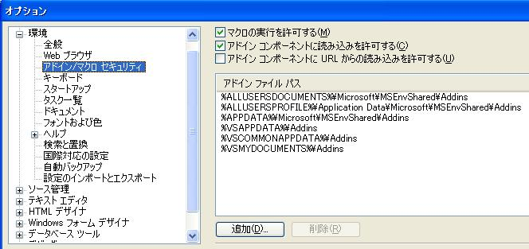

Welcome to the "koropokkur.net" project.
概要
Koropokkur.NET（「コロポックル」）はVisualStudioでの開発をささやかに支援することを目的とした
汎用的なアドイン集です。
提供する各機能については「アドイン一覧」をご覧下さい。
お知らせ
- ただ今公開準備中です。
必要環境
Koropokkur.NETのVisualStudioアドインは以下の環境での動作を想定しています。
- VisualStudio2008 (Standard以上のEdition）
- VisualStudio2005 (Standard以上のEdition）
ダウンロード
- 2009/01/29 暫定公開しています。→Koropokkur.NET 0.1.0
セットアップ
１．ダウンロードしたzipファイルを解凍します。
２．解凍したフォルダの中にあるbuildフォルダ下のファイルを任意の同じ場所にコピーします。
３．VisualStudioを起動します。
４．「ツール」→「オプション」→「環境」を選択します。
５．「アドイン/マクロ セキュリティ」を選択し、２．でコピーしたパスを「アドインファイルパス」に追加します。
６．OKボタンを押してオプション画面を閉じ、VisualStudioを再起動します。
７．「ツール」→「アドインマネージャ」を選択し、VSArrangeなどのアドインが追加されていることを確認します。
アドイン一覧
| アドイン名 | 概要 | 初出 | 最新 |
| VSArrange | プロジェクト内の未登録、削除要素を整理します。 コード自動生成系のツールとの併用で効果を発揮します。 | 0.1.0 | 0.1.0～ |